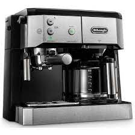
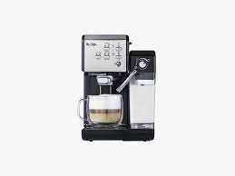
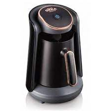
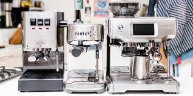

تفاصيل اخريA coffee maker is a very simple,
low-tech, yet efficient machine. A heating element circles the hot plate at the bottom of the maker. Wrapped in this heating element is a hollow aluminum tube. When water is added to the reservoir, a small hole in the bottom of the container feeds a plastic hose that leads down to one end of the aluminum tube. Once the coffee pot is switched on,
the heating element gets hot very quickly. Sensors cycle the element on and off to keep it 195-205 degrees Fahrenheit (90-96 Celsius). Water sitting in the aluminum tube boils and the turbulence creates bubbles that rise though the opposite end of the tube, traveling up an exit hose (making room for more water to enter the heating element).
Hot water riding on these rising bubbles creates upward lift that carries a small stream of boiling water to the top of the coffee maker. Here the exit hose terminates on to a drip plate. The drip plate distributes the boiling water evenly to fall through to the coffee grounds below in the filter basket. Hence, the drip coffee maker fills the carafe with freshly brewed java.


